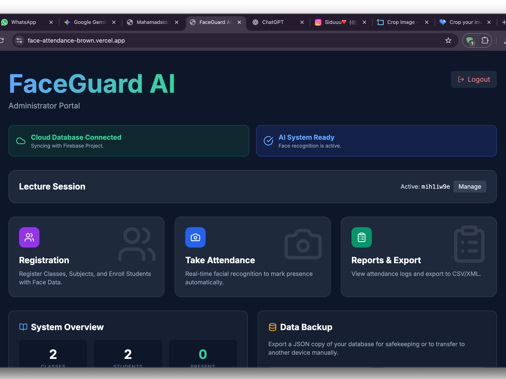

First AIML Application
Facial Recognition Attendance System
This beginner project demonstrates the practical application of computer vision principles to automate attendance tracking. It uses a web interface to capture data and apply basic ML concepts, serving as a critical learning step in my AIML journey.
**Tech Stack:** JavaScript/Web Development, Basic Computer Vision Libraries.
View Live Demo